datazines · a sketchbook
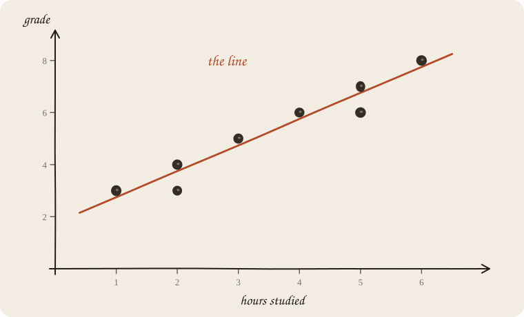
Flip it like a notebook. One page = one idea. Done.
You want to know how a grade depends on hours studied.
You ask 8 people:
| hours studied | grade |
|---|---|
| 1 | 3 |
| 2 | 4 |
| 2 | 3 |
| 3 | 5 |
| 4 | 6 |
| 5 | 7 |
| 5 | 6 |
| 6 | 8 |
This is not a law. Person A studies 2 hours and gets a 3. Person B also studies 2 and gets a 4. Life is noisy.
Still, you can see a direction: more hours → tend to mean a better grade.
Question of the whole sketchbook:
Can I turn x (hours) into a decent guess for y (grade)?
Not perfect. Good enough.
Each person = one dot.
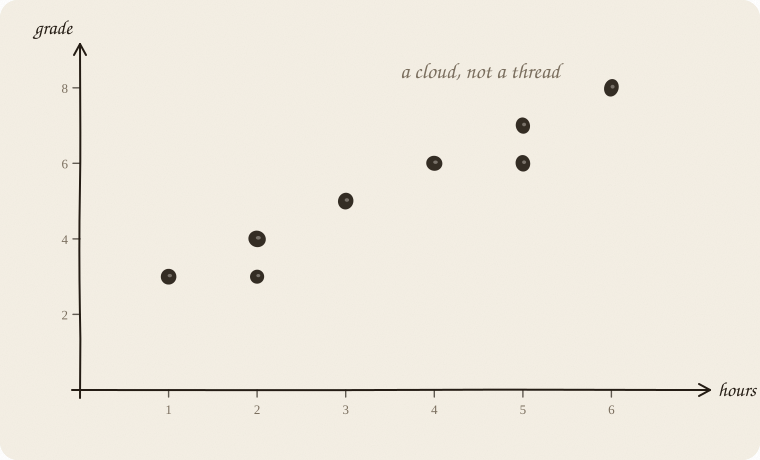
That is a cloud of points.
You can already see some things without math:
You put a straight line through the cloud.
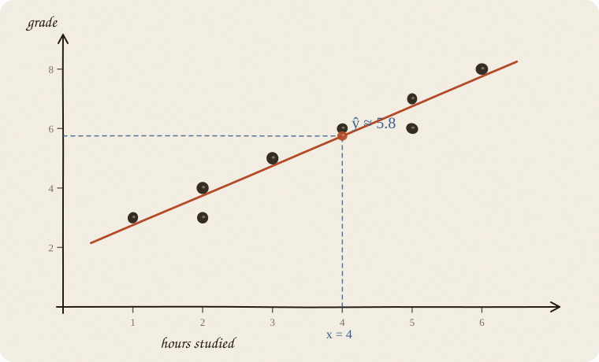
The line does not say: “This is the world.”
It says: “Roughly, on average.”
Someone with 4 hours:
line at x = 4 → ŷ ≈ 5.8
The hat on the y (ŷ, “y hat”) means: prediction, not the real grade.
Real grade next to it: 6.
Prediction: 5.8.
Off, but close. That is the deal.
Every straight line on paper has exactly two knobs:
ŷ = a + b · x
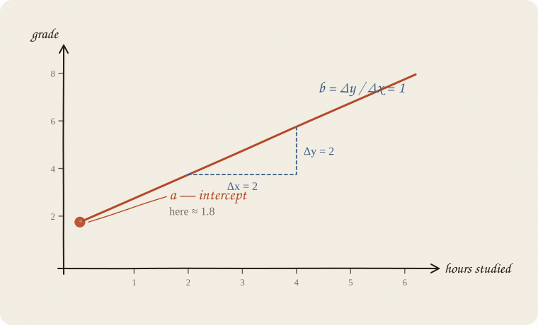
What comes out when x = 0?
Here: 0 hours studied. The line hits the grade axis at a = 1.75.
Sometimes a is meaningful (“base rent, before anything happens”).
Sometimes a is just math and nonsense outside the data — nobody sits an exam with −3 hours of studying.
What happens when x grows by 1?
For our 8 people, b = 1. Each extra hour goes with +1 grade point, on average.
Other lines, other b — just to feel the knob:
| b | means |
|---|---|
| +1 | each extra hour: grade +1 on average (this cloud) |
| −0.4 | each extra hour: grade −0.4 on average |
| 0 | x does nothing. Flat line. |
The sentence to keep:
b is the average change in ŷ when x grows by 1.
Not for one person. For the pattern in the cloud. Not a cause — that is extra (01 confounding).
Two points on the line:
$$b = \frac{\Delta y}{\Delta x} = \frac{6.8 - 3.8}{5 - 2} = \frac{3}{3} = 1$$
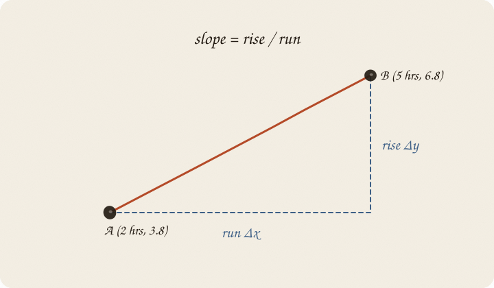
Slope = rise over run.
School math — except the line does not have to go through two points. It has to go through a whole cloud.
The line almost never hits the point exactly. The gap up / down is the error.
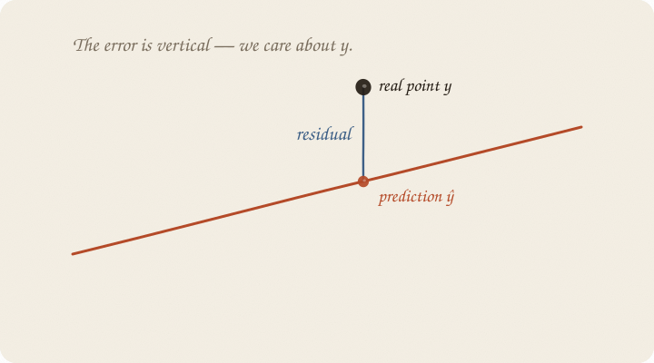
residual = real − prediction = y − ŷ
Why vertical, not diagonal onto the line?
Because we are predicting y. We care about: how far off was the grade? Not the slanted distance on the page.
Under ordinary least squares (the default line, next page), the mean of all residuals is always exactly 0. The overs and the unders cancel. That is why adding them raw is useless — and why we square. It is also why the line is forced through the centroid of the cloud (page 10): the average leftover is zero, so the average point sits on the line.
You could draw a thousand lines through the cloud. Most of them are bad.
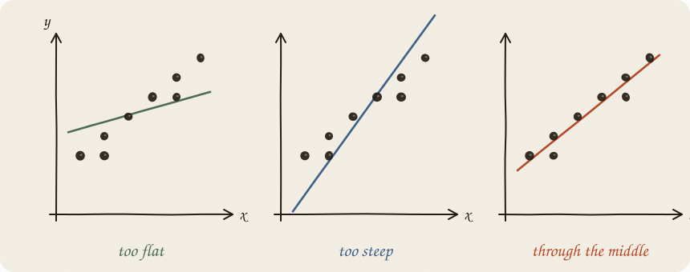
Idea: make the residuals small.
Naive thought: add all residuals.
Problem: +2 and −2 sum to 0. Looks perfect. Is not.
So the classic recipe:
$$\text{sum of squared errors} = (y_1-\hat y_1)^2 + (y_2-\hat y_2)^2 + \cdots + (y_n-\hat y_n)^2$$
That is least squares. Sounds like a spell. It is only: punish big misses hard.
A point 4 grades off costs 16.
Two points 1 grade off cost 2.
So outliers yank the line toward themselves.
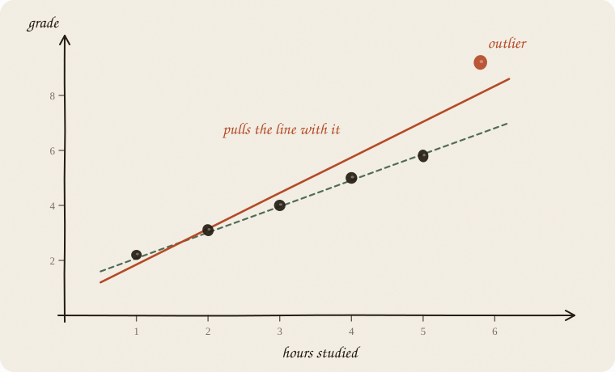
The best line for the 8 people is (no rounding; the data are tidy):
$$\hat y = 1.75 + 1 \cdot \text{hours}$$
Then:
| hours | calculation | prediction ŷ |
|---|---|---|
| 0 | 1.75 + 1·0 | 1.75 |
| 2 | 1.75 + 1·2 | 3.75 |
| 4 | 1.75 + 1·4 | 5.75 |
| 6 | 1.75 + 1·6 | 7.75 |
Someone studies 3 hours:
$$\hat y = 1.75 + 1 \cdot 3 = 4.75$$
You do not say: “You will get a 4.75.”
You say: “People like you landed around 4.8, on average. Scatter extra.”
The line is an average-maker, not an oracle.
Linear here does not mean “the world is simple.”
Linear means: the effect of x is the same size everywhere.
+1 hour at 1 hour → +1 grade
+1 hour at 5 hours → +1 grade (same b)
The line has no bend. No plateau. No “after 4 hours it stops helping.”
If the truth looks like this:
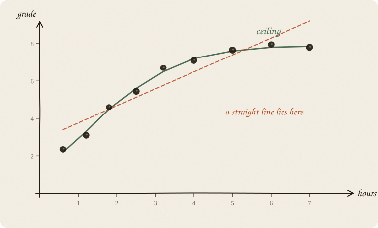
…then a straight line is the wrong tool. It cuts the curve and lies at both ends.
Later you might want other models (a curve, steps, trees). For now it is enough: straight line = constant effect.
Four points, deliberately small. Just so the trick lands.
| x (hours) | y (grade) |
|---|---|
| 1 | 2 |
| 2 | 4 |
| 3 | 5 |
| 4 | 7 |
Means (the “centroid” of the cloud):
$$\bar x = 2.5 \qquad \bar y = 4.5$$
The best line always goes through the centroid (x̄, ȳ). Keep that.
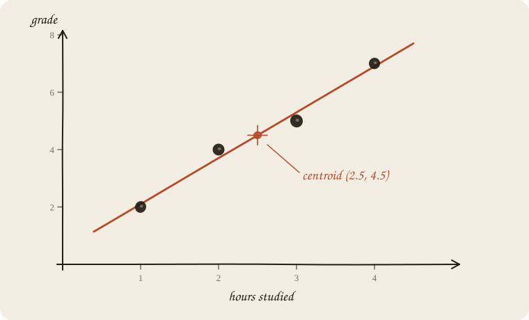
Slope from how x and y walk together:
$$b = 1.6 \qquad a = \bar y - b\cdot\bar x = 4.5 - 1.6\cdot 2.5 = 0.5$$
$$\hat y = 0.5 + 1.6 \cdot x$$
Check:
| x | ŷ | real y | residual | residual² |
|---|---|---|---|---|
| 1 | 2.1 | 2 | −0.1 | 0.01 |
| 2 | 3.7 | 4 | +0.3 | 0.09 |
| 3 | 5.3 | 5 | −0.3 | 0.09 |
| 4 | 6.9 | 7 | +0.1 | 0.01 |
Sum of squares = 0.20. Tiny. The line sits tight.
You do not have to do this by hand every time. The computer does exactly that — just with more points. Your head only needs: centroid + slope + small residual².
How good is the line?
Without x, best guess is the average ȳ. A flat line. R² against that is 0.
With x, a slanted line. R² is how much of the scatter that line explained away.
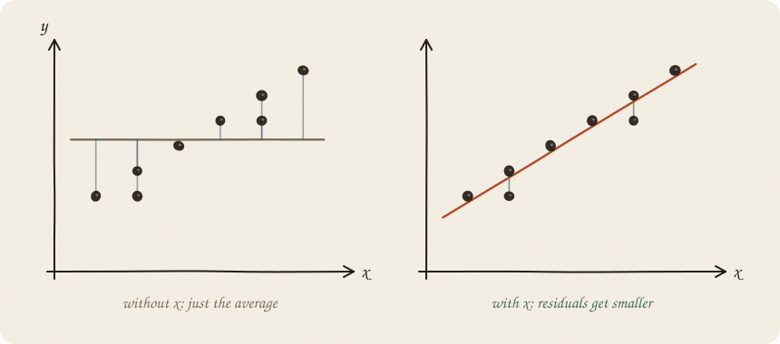
| R² | means |
|---|---|
| 0 | Line is useless. As good as the plain average. |
| 0.5 | Half the scatter explained. Okay. |
| 1 | Every point sits exactly on the line. A fairy tale. |
R² = 0.8 sounds great. It does not mean x is the cause. It only means the points hug the line.
0.6 is not a medal and not a fail. It is 60% of the scatter explained — on these people. New people: usually less. Compare to the flat average (R² = 0), not to a textbook “good.”
Classic trap, everyone falls in once:
Ice cream sales and drownings rise together.
So ice cream causes drowning?
No. Both rise because it is summer. A third variable.
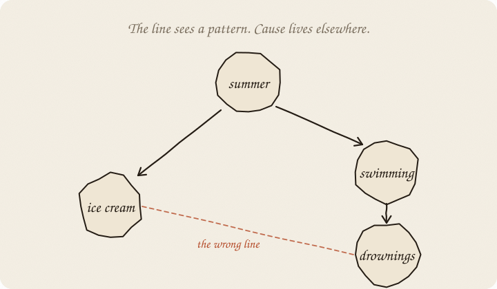
The line between ice cream and drownings would be steep and “significant” — and still wrong as a story.
Linear regression finds patterns.
Cause is on you: experiment, time, domain knowledge.
More traps:
| trap | picture |
|---|---|
| outlier | One far-away point yanks the whole line |
| measure only one range | Infer from 18-year-olds to toddlers |
| predict past the data | Line at x = 200 hours → grade 220. Nonsense |
| y drives x | Bad grade → then more studying. Arrow the wrong way |
So far: one x. Hours, a line.
Often you have two levers. Hours and sleep. Same machine. The picture changes:
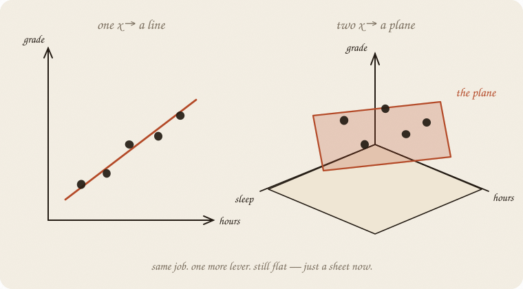
$$\text{grade} \approx a + b_1\cdot\text{hours} + b_2\cdot\text{sleep}$$
Still “linear”: each lever has one fixed add-on. No bend. Only now the fit is a flat plane through a 3-D cloud, not a line through a 2-D one.
Each b is still “+1 on that lever, on average.” The new phrase: holding the other lever still. Without it you misread b. (The eight people on page 1 have no sleep column. This page is the shape, not a fitted number.)
A third lever is the same trick in a space you cannot draw. If two levers say almost the same thing — hours studied and minutes studied — they fight. One b goes huge, the other huge the other way. Net effect maybe fine; the story is garbage. The textbook name is multicollinearity. Ridge is the seatbelt (02 ridge regression).
You do not need to derive the formula. Just see the landscape.
Think of a and b as coordinates on the floor. At every pair you measure the sum of squared errors from page 7. That pile is a height. The heights make a bowl.
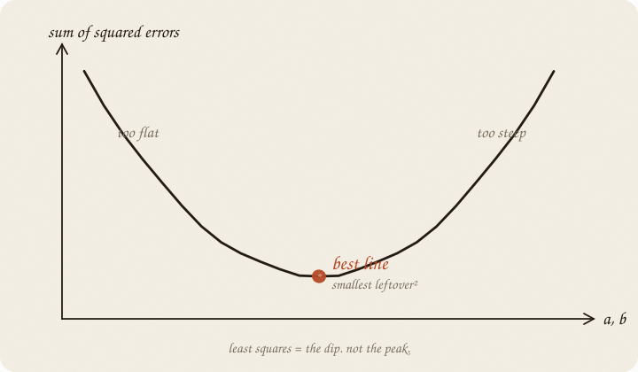
The best line is the bottom of the bowl — leftover² as small as it can get. That is why people say least squares, not most. The rust blob is the dip, not a peak.
The computer rolls downhill and stops. Done.
For a straight line there is one clear dip. That is why simple linear regression is well-behaved: one answer, no magic. When there is no formula for the bottom, you walk the bowl: 01 gradient descent.
If you keep only one thing:
cloud → line → ŷ = a + b x. leftover is vertical. pattern ≠ cause.
Same eight rows as page 1. No pipeline, no scaling. Just the line. One x, least squares: scale does not change the story. Ridge will tax size, so it will demand a scaler (02 ridge regression, page 10). Not tonight.
from sklearn.linear_model import LinearRegression
import numpy as np
hours = np.array([1, 2, 2, 3, 4, 5, 5, 6]).reshape(-1, 1)
grade = np.array([3, 4, 3, 5, 6, 7, 6, 8])
line = LinearRegression().fit(hours, grade)
print(f"ŷ = {line.intercept_:.2f} + {line.coef_[0]:.2f} · hours")
print("3 hours →", round(line.predict([[3]])[0], 2))
print("4 hours →", round(line.predict([[4]])[0], 2))
print("R² =", round(line.score(hours, grade), 3))
ŷ = 1.75 + 1.00 · hours
3 hours → 4.75
4 hours → 5.75
R² = 0.936
Same numbers as the sketchbook. .score is R² on these eight people — pride, not a test. Next person: different sketchbook, or at least a split. Do not copy this unscaled fit into lasso or elastic-net. Those taxes care how big the knobs are written.
| symbol | meaning |
|---|---|
| ŷ = a + b x | the line |
| a | intercept (x = 0) |
| b | slope: +1 x goes with +b on ŷ (pattern, not cause) |
| ŷ | prediction (“y hat”) |
| y | real value |
| y − ŷ | residual / error |
| R² | share of scatter explained on these people (can go negative on new people) |
Also called (in a room):
| here | there |
|---|---|
| leftover | residual |
| lever / x | feature |
| knob b | coefficient / weight |
| cloud | scatter |
Best line = smallest sum of (residuals)².
It always goes through the centroid (x̄, ȳ).
linear — effect the same size everywhere (no bend).
cause — extra. Not inside the formula.
Reach for it when y is a real number, the cloud looks like a straight smear, and you want a sentence: “+1 on x goes with +b on y.”
Skip it when y is yes/no (01 logistic regression); y is a count that cannot go negative (06 GLM); the cloud bends; one point yanks the line (check the cloud, or a method that does not square the miss — ridge is for huge knobs, not that yank); you have more levers than people.
Pays you: simple, fast, knobs you can read. The starting machine.
Costs you: no legal region for ŷ. Outliers scream. Twin x fight (multicollinearity). Cause is not in the formula. A later tax on size (02 ridge regression, 03 lasso) needs scale first — this notebook did not.
Sketched as a notebook, not a lecture. If the line goes feral: 02 ridge regression. If y is yes/no: 01 logistic regression.
Flip it like a notebook. One page = one idea.